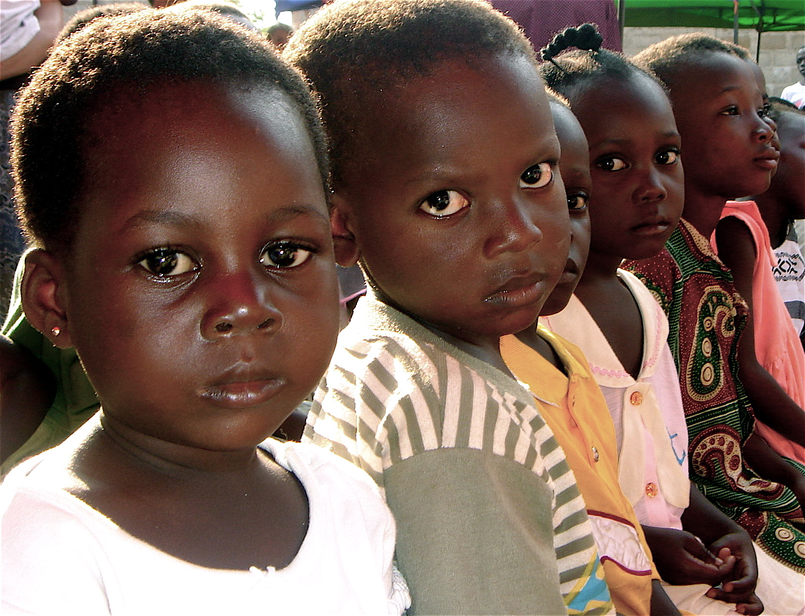

Vi har valgt å fokusere prosjektet på Nigeria under test-fasen. Proskjetet skal begynne med hovedstad som heter Abuja. Slik kan gå videre til småbyer etterhvert. I følge "Save education" trekkes 12 land hvor barna står i fare og kommer aldri tilbake til skole. En av de landene er Nigeria. Særlig i konronapandemien har blitt utsatt mange barn i fare. Derfor har vi pekt på Nigeria proskjetet våres.
10.5 millioner (tilsvarende 38 %) barn går ikke på skole i Nigeria. «Skrive-og lesekunnskapene her er blant de aller laveste. Er du en jente i nordøst Nigeria stiller du aller bakerst i den globale skoleklassen.»
Vi håper å hjelpe unge elever
Vi benytter et nettbrett som sendes ut til skoler. Slik det er tilgjengelige til alle.